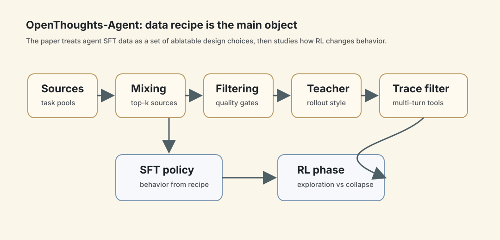
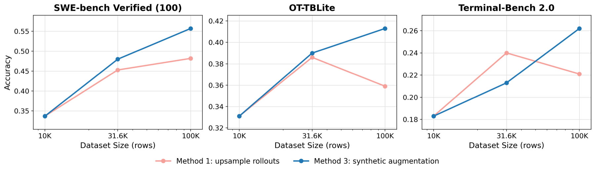
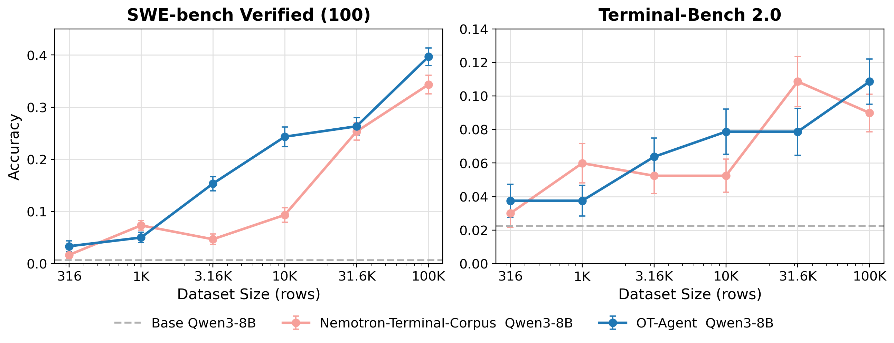
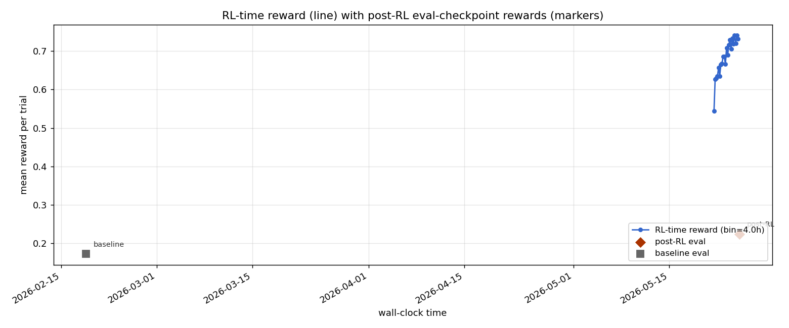

OpenThoughts-Agent：agent 模型不是只靠 RL，数据配方本身就是主菜
- Paper: OpenThoughts-Agent: Data Recipes for Agentic Models
- Version: arXiv v1, 2026-06-23
- Project: openthoughts.ai
- 类型: agentic model post-training / SFT data curation / RL data ablation
- 关键词: Qwen3-32B, OpenThinkerAgent-32B, agent traces, SFT pipeline, RLOO, SWE-Bench, Terminal-Bench
读法：给人和 agent 的路标
这篇不要按“又一个 SWE-Bench 模型”读。它真正有价值的地方是 把 agentic SFT 数据怎么做这件事拆开做了 100+ controlled ablations，并且把 SFT 和 RL 放在同一个后训练链路里看。
给 agent 之后检索，关键词是：OpenThoughts-Agent、six-stage SFT pipeline、task source ablation、teacher model ablation、minimum-turn filter、synthetic task augmentation、pymethods2test RL、reward collapse。
一句话判断
OpenThoughts-Agent 的核心结论是：agent 后训练的上限很大一部分来自数据源、轨迹过滤和规模化方式，而不是简单把更多 rollout 堆进 SFT 或把奖励接进 RL。它给出一套公开数据配方，把 Qwen3-32B 训到 7 个 agent benchmark 平均 44.8%，超过 Nemotron-Terminal-32B 的 40.9%。
图表优先读法
| 先看 | 图/表 | 读完应该抓住什么 |
|---|---|---|
| 1 | Figure 2：SFT pipeline | agent 数据配方由 task source、mixing、augmentation、filter、teacher、rollout filter 共同决定 |
| 2 | Table 1 | 100K 高质量 traces 比 264K 粗规模更有价值 |
| 3 | Figure 3 / Figure 5 | upsampling 会 plateau，synthetic task augmentation 才能继续扩语义多样性 |
| 4 | Figure 6 / Figure 7 | RL 数据源会改变策略性格，也可能 reward collapse |
| 5 | Table 10 / 11 | RL 最适合接在 moderately strong SFT 后面 |

这张自制图把 OpenThoughts-Agent 的贡献从“又训了一个 agent 模型”拉回“数据配方对象化”：任务源、混合、过滤、teacher 和 rollout filter 都是可消融的旋钮；SFT 之后接 RL，则进一步改变探索风格，甚至可能 reward collapse。后文的 100+ ablations 就是围绕这些旋钮展开。
先看 SFT 配方图

Figure 2 是全文最该先看的图。作者把 agent SFT 数据拆成六个独立可 ablate 的阶段：
| 阶段 | 问题 | 论文发现 |
|---|---|---|
| Task source | 任务从哪里来 | 这是影响最大的因素，任务源选择能在 SWE-Bench Verified-100 上拉开约 30pp |
| Source mixing | 多个来源怎么混 | Top-4/Top-8 比单一来源更稳，但不是越多越好 |
| Task augmentation | 是否改写任务描述 | 多种 LLM-driven augmentation 没有带来稳定收益 |
| Task filtering | 是否筛任务描述 | LLM difficulty / quality filter 有约 +3pp 平均收益 |
| Teacher model | 谁来生成轨迹 | 最强 benchmark 模型不一定是最佳 teacher |
| Rollout filtering | 保留哪些轨迹 | 保留更长、多轮工具交互的 trace 更有用 |
这张图的意义不是“流程很多”，而是每个节点都对应一个可复现的设计选择。它把 agent 数据配方从经验玄学往工程实验拉了一步。
32B 主结果
Table 1 的核心结果如下：
| Model | Train size | Method | Avg | SWE-Bench Verified | Terminal-Bench 2.0 | BFCL-Parity | FinanceAgent-Terminal |
|---|---|---|---|---|---|---|---|
| OpenThinkerAgent-32B | 100K | SFT | 44.8 | 54.0 | 26.2 | 85.9 | 44.0 |
| Nemotron-Terminal-32B | 264K | SFT | 40.9 | 41.9 | 25.1 | 69.1 | 40.7 |
| SWE-Lego-Qwen3-32B | 18K | SFT | 34.7 | 51.0 | 16.1 | 81.0 | 15.3 |
| Qwen3-32B base | N/A | N/A | 22.8 | 29.1 | 7.5 | 68.3 | 9.3 |
我读这个表的重点不是“平均第一”，而是两个细节：
- Terminal-Bench 和 SWE-Bench 同时涨：很多 agent 数据只会把一个 benchmark 顶上去，这篇的核心诉求是跨 agent 任务泛化。
- 训练量不是唯一解释：OpenThinkerAgent-32B 用 100K traces 超过了 264K 的 Nemotron-Terminal-32B，说明配方质量比规模粗暴堆叠更重要。
Scaling：为什么不是把 Top tasks 重复采样就行


作者对 100K 数据扩展做了几种尝试。最关键的对比是：
- Method 1: upsample top task descriptions，从 31.6K 到 100K 会 plateau，SWE-Bench Verified-100 只约 +3pp，Terminal-Bench 2.0 反而约 -2pp。
- Method 3: synthetic task augmentation，对已有高质量 task 做合成扩展，能更稳定继续提升。
- Method 4: 增加更多来源到 Top-8/Top-16，Table 8 显示在 100K 规模下并没有可靠超过 Top-4。
这其实很像数据 flywheel 的一个常见坑：重复采样高分来源会很快把模型带进窄分布；真正要扩大规模，需要创造 语义多样性，而不是只把同一类任务多跑几遍。
SFT 里的几个反直觉细节
1. 最强模型不一定是最佳 teacher
Table 6 的结论很有意思：GPT-5.3-Codex 是更强的 task-solving 模型，但作为轨迹 teacher 不如 GLM-4.7-AWQ，尤其在 Terminal-Bench 2.0 上落后约 5pp。
合理推断是：SFT teacher 的目标不是“自己把题做对”，而是生成适合学生模型学习的轨迹。轨迹格式、工具使用风格、思考长度、错误恢复方式都会影响可蒸馏性。
2. 更长轨迹不是噪声，可能是 agent 行为信号
Table 7 和 Appendix Table 15 都支持 minimum-turn filter。即使在 matched token budget 下，保留至少 5 turn 的轨迹也比随机子集强：
| 对比 | SWE-Bench Verified-100 | Terminal-Bench 2.0 |
|---|---|---|
| min-turn filter vs random, token-matched | +5.4pp | +3.8pp |
这对 agent 数据很重要：短轨迹可能只是简单题或浅层工具调用，长轨迹更包含搜索、试错、恢复、验证这些真正的 agent 行为。
3. RL 数据源会改变策略性格
论文不只跑 SFT，也在 8B 上系统比较 RL data source。Table 9 里 pymethods2test 是最强 RL source，后续行为分析显示它把策略推向更强探索：
- post-RL 平均增加约 +12.9 turns；
- token 数增加约 +29%；
- 在 30 个同题 pre/post trace pair 上，LLM judge 认为 post-RL 更好，比例 25/30 = 83.3%；
- held-out SWE-Bench Verified 上出现 18 个 fail -> pass flip。
但这不是纯好事。Figure 6 显示 hero run 的 reward 先升到约 0.51，之后 collapse 到约 0.13。也就是说，这种“更多探索”的行为可能带来泛化收益，也可能触发 reward collapse。


两张 RL 曲线要一起看：pymethods2test 这类 hero source 会把策略推向更强探索，但探索过头会 collapse；llm-verifier-freelancer baseline 则更像逐步压缩行为，reward 更平滑上升。这里的 takeaway 不是“某个 source 永远更好”，而是 RL 数据源会塑造 agent 的行为风格，所以只看最终 benchmark 分数会漏掉训练动态。
8B：SFT 和 RL 怎么组合
Table 10 和 Table 11 的核心结论是：RL 最适合接在 moderately strong SFT 后面，而不是裸 base 或已经过度蒸馏的 SFT 后面。
Table 11 很直接：
| Recipe | SWE-Bench Verified-100 | OT-TBLite | Terminal-Bench 2.0 | Raw avg |
|---|---|---|---|---|
| OT-Agent-ColdSFT+RL-8B | 35.7 | 16.0 | 13.5 | 21.7 |
| OT-Agent-SFT-8B (10K) | 24.3 | 15.6 | 7.9 | 15.9 |
| OT-Agent-ColdSFT | 23.7 | 14.8 | 6.7 | 15.1 |
| RL on Qwen3-8B, no SFT | 1.0 | 7.8 | 1.9 | 3.6 |
这点对自己的训练 pipeline 很实用：SFT 不是 RL 的替代品，也不是越强越好；它更像给 RL 准备可探索的起点。太弱没有 coverage，太强可能已经把行为分布锁死。
我怎么判断
可信之处
- 控制变量多：100+ ablation 让它不像单次 hero run。
- 跨 benchmark：核心评估覆盖 SWE-Bench、Terminal-Bench、Aider、BFCL、GAIA、FinanceAgent、MedAgentBench。
- 有行为分析：Appendix F 不只报分数，还分析 RL 学到了什么行为。
- 公开 artifacts：论文承诺释放数据、pipeline、实验数据、模型。
需要警惕
- base model 单一：主要从 Qwen3 family 出发，是否迁移到 Qwen3.5、DeepSeek、Kimi 等不同底座还没 ablate。
- RL 只在 8B 做系统研究：作者也承认 32B 是否复用同一 RL recipe 是开放问题。
- benchmark 仍可能塑形数据配方：虽然比单 benchmark 强，但 agent 评测本身仍偏 coding/terminal/tool-use。
- reward collapse 说明 RL 很脆：数据源强并不等于训练稳定，策略可能朝探索或收缩两个方向漂移。
对我的价值
这篇最适合沉淀成一个 agent training checklist：
- 先做 task-source ablation，不要急着优化 teacher 或 RL。
- SFT 数据要看轨迹结构，不是只看 final pass/fail。
- 扩数据优先扩语义多样性，少做简单 upsample。
- teacher 要按 student 学习效果选，不是按 teacher 自己 leaderboard 选。
- RL source 会改变策略性格，需要行为指标和 reward 曲线一起看。
如果以后我要自己 build agent sandbox/training pipeline，这篇可以作为“数据配方基线”：先复刻小规模 10K ablation，再考虑 100K scale-up 和 RL。
一句话收束
OpenThoughts-Agent 最好的地方是把“agent 后训练靠感觉调数据”变成了一组可讨论、可复用、可失败的实验配方。它不完美，但足够像一个公开 cookbook。